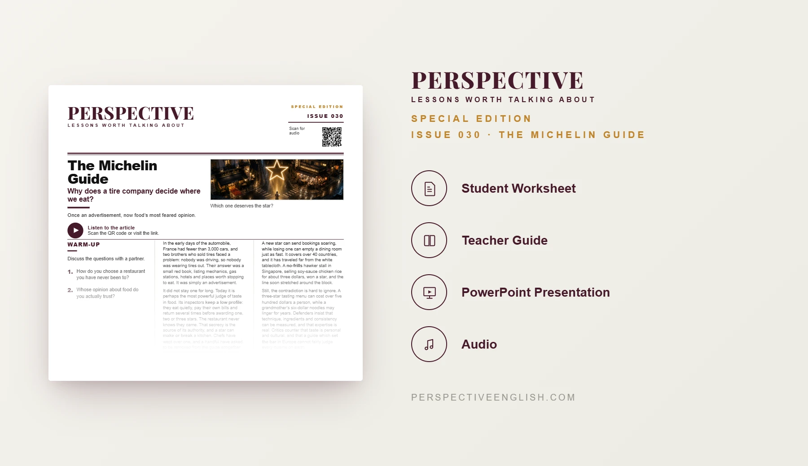

SPECIAL EDITION · ISSUE 030
Michelin Guide ESL Lesson
Who decides what good food is?
A ready-to-teach C1–C2 Michelin Guide ESL lesson examining Michelin stars, culinary authority, prestige, restaurant ratings, cultural standards and whether food quality can be judged objectively.
CHOOSE YOUR LEVEL
Collection 05 includes Issues 026–030.
LESSON PREVIEW

ABOUT THIS LESSON
About This Michelin Guide ESL Lesson
What began as a tire-company advertisement became one of the most powerful judges of taste in global food culture. A Michelin star can bring prestige and money, but also enormous pressure.
This C1–C2 Michelin Guide ESL lesson examines culinary authority, anonymous inspection, cultural standards, prestige and the tension between measurable technique and personal taste.
Students work with advanced idiomatic language, allocate five Michelin stars across contrasting restaurants, defend criteria for excellence, respond to regular customers after winning a star and write an extended argument weighing both sides.
FROM THE ARTICLE
WHAT'S INCLUDED
What's Included in the Michelin Guide Lesson?
- Magazine-style C1–C2 ESL student worksheet
- Advanced original Michelin Guide reading and audio recording
- Five idiomatic expressions and evidence-based true-or-false comprehension
- Five advanced discussion questions about reviews, culinary authority, prestige and cultural standards
- Michelin inspector critical-thinking activity: allocate five stars across five contrasting restaurants
- Language in Context practice with idiomatic expressions from the article
- Restaurant-owner speaking challenge: propose changes after winning a star and defend them to regular customers
- 200–250 word argument: Can anyone really decide what the world’s best food is?
- Teacher guide and complete answer key
- Ready-to-use classroom presentation
GET THE COMPLETE LESSON
Ready to Teach Michelin Guide?
Get the complete C1–C2 Michelin Guide ESL lesson individually or save with Perspective Collection 05.
Secure checkout and instant digital delivery through Payhip.